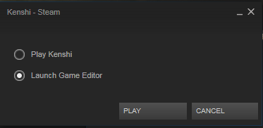
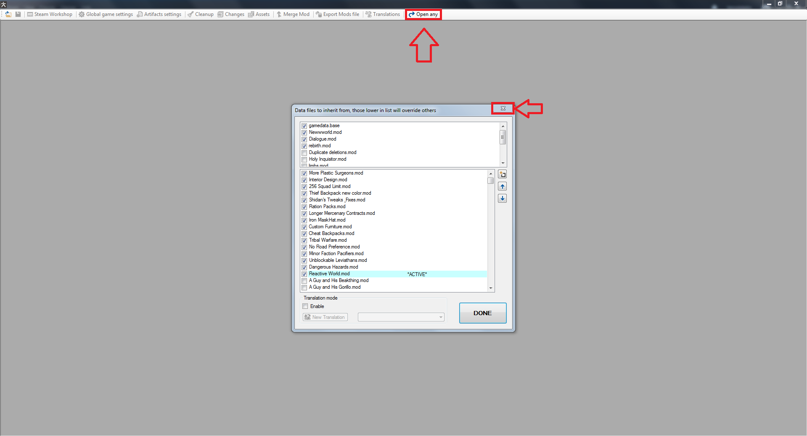
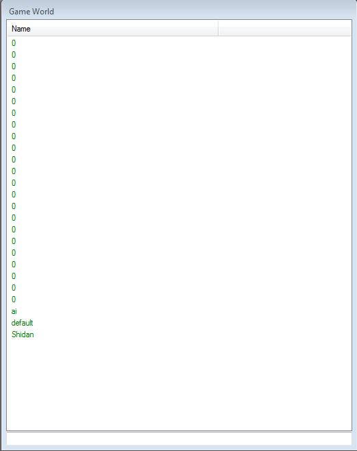
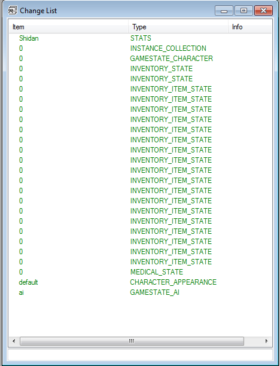
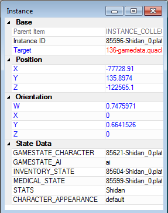
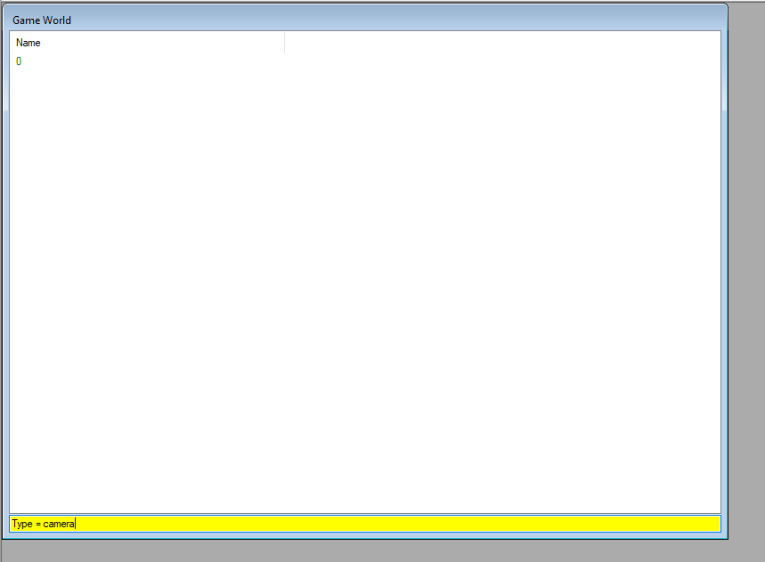
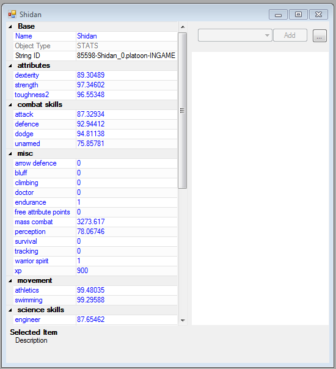

Introduction
This guide should help you through any save editing for Kenshi you may need. If you don't understand part of it, I'm happy to answer any questions. Want to do something not covered by this guide? Feel free to ask as well, if it's somehting that can be done I'll add it to the guide.
Getting Started
This section will cover the basic things you need to do know for any save editing.
Backup
Always backup your save before editing it, in case you do something wrong you want to be able to revert to before you made the edit(s).
The easiest method to do this is to just create a new save game while in game, instead of overwriting your normal one. My personal preference is to create a new save, and then also quicksave. Then when you go in to edit the game, edit the quicksave. By only ever editing the quicksave, this prevents you from ever accidentally editing the wrong save.
Opening save files using the FCS
First launch the FCS, easiest method is to select the "Launch Game Editor" option on the initial popup when running Kenshi through Steam.
Once you're in, you'll be met with a list of mods to edit or turn off. Just close this with the x in top right of the window, you don't need it for save editing. Then click "open any" from the buttons along the top.
After that you'll be met with the installation folder of the game. (Note: as of 1.0.50 the default save location has been moved to C:\Users\
Generally speaking, you'll almost always be opening either the quick.save file or your squad's .platoon file found in the platoon folder. The platoon file will be named after your faction in-game. If you've never renamed it, it will be something like Nameless_0.platoon.
Navigating a File
When you open a file you will be met with this window of entries, of which almost all are named 0.
This is very unhelpful with regards to knowing what each entry is. There is however a way to assist you in deciphering it. By clicking the "Changes" button up at the top, it will show you another window with all the entries listed, but this time it will show a type next to the entry. In this guide I will often refer to entries by their type, so you'll be using this regularly.
Another thing you'll need to know is how to differentiate between multiple entries of the same type, especially with regards to editing character data, as you'll have medical state, gamedata state, inventory state, etc. entries for each character in the squad, all with essentiallly the same name and type.
In this case you'll want to open the "INSTANCE_COLLECTION" type entry. At which point you'll want to open an instance shown on the right by double clicking on it. All the entries shown in this instance pertain to the same character, and can be opened by simply double clicking it them here, so can use this method to find the corresponding entries you want to edit when trying to edit a specific character. As you can see in the screenshot below, the stats entry is named after the character, this allows you to tell which instance goes to which character.
Player Money
This is a rather simple change, though located in an unusual location. Open the quick.save file and search the changes list until you find the entry named "0" that has the type "camera" on the list. Alternatively, if you're having trouble with that, go down to the search bar in the main window, and type this exactly "Type = camera" like shown below.
After you locate the entry, simply edit the "player money" value located on the left side of it. Unsure what the upper limit on the value is, so be wary when increasing it. Probably don't go higher than 2 billion or so to avoid issues.
Thanks to Neorro for pointing out where the value could be found. :)
Basic Character Values (Bounty, Stats, Health, Hunger, Death, Limbs, etc.)
Introduction
This chapter will take you through the process of modifying your character's Attributes, Skills, Health, Hunger, and similarly related character data.
Regardless of what you'r editing here, you'll want to open the platoon file that contains the character you want to edit. It's generally recommended that you move the character you want to edit to his own squad prior to editing, as it simply makes it easier to find the correct entries to edit.
Bounties
For this one you'll need to open the GAMESTATE_CHARACTER entry, inside you'll find a number of values related to bounties. "amount#, bountyexp#, bountyfac#, claim#, and crimes#.
First you need to identify which number corresponds to which number. For this you need to check the bountyfac value, this will show the faction's unique SID. I will list the most common bounty factions below, otherwise you'll need to open up a mod in the FCS, then go to the faction list and search the SID using the search bar.
- United Cities
defaultEmpireFactionSID- Holy Nation
1083-gamedata.base- Shek Kingdom
11624-Dialogue (10).mod
To remove a specific bounty, the safest method is to change the size of the bounty using the amount# value. Setting it to a low number (but higher than 0), will allow the bounty to expire naturally and quickly. Or you could set it to whatever else you want if you're not after removal.
Personality
All characters in Kenshi have a personality, sometimes preset, sometimes random, but all have one. They govern how a character responds to dialog, and the lines they say. While this is mostly a factor for NPCs, since their dialog tends to be the ones with real effects in the world, some players may be interested in identifying or changing their own character's dialog.
It's a rather simple change. First, open the platoon file for the character, and locate the "GAMESTATE_CHARACTER" type entry. Towards the bottom half of the lis tof values, there will be one named "personality" with a number listed beside it. The number is which personality the character has, and it corresponds to the numbers shown below.
- 1
- Honorable
- 2
- Traitorous
- 5
- Smart
- 6
- Dumb
- 9
- Brave
- 10
- Fearful
- 14
- Maniacal
There are also a few more, though I advise against using them, and they will never spawn naturally in vanilla. They were never fully implemented, though they do function. There are just almost no lines for them.
- 11
- Warm/Kind
- 12
- Cold/Cruel
- 13
- Normal
If you wish to change the personality, simply change the number to the one that corresponds to the personality you'd like.
Attributes and Skills
This is one of the simpler changes, as the entry you need to edit is simply named after the character. Don't even need to use the changes screen to assist you, just scroll through the list until you find the character's name, and then open it by double clicking.
You'll be met with the window below, showing each of the character's stats. Simply change the numbers next to each stat to change what level it is. It is however HIGHLY recommended you never set them above 100, as sometimes they bug out when higher than that, often having negative effects on your character.
Health
For this you'll want to open the MEDICAL_STATE entry for your character, either through the changes screeen, or the INSTANCE_COLLECTION if you have multiple characters in the squad.
Inside you'll see multiple values corrsponding to each body part, sorted in order of the parts in-game.
- bandage
- the amount of cut damage bandaged on the part
- flesh
- your "real" health on the part
- rig
- how much of the HP has been splinted
- stun
- the amount of blunt damage on the part
- wear
- the wear and tear damage on a robotic part
Any discrepancy between the values will be treated as unbandaged cut damage. (e.g. Setting a human's fesh value to 50 and the bandage to 20 will leave 30 unbandaged cut damage on the part.)
The simplest thing to do is heal a character. By simply setting all the values but flesh to 0 and then changing your flesh values to the character's maximum will put your character back to full health.
Alternatively you could damage a character by changing their flesh value to a lower value than their maximum. Handy for losing specific limbs easily, as you can just set the limb's health to -100% of their maximum health, and it will pop off the next time you load up the game if your limb loss setting is set to frequent in-game.
You'll also see the blood level in here, which as you might expect, is the character's blood level. It's 1 to 1, so this is your exact blood level shown in-game.
Hunger
Inside the MEDICAL_STATE entry for the character this is shown on the "hung" value, as a number from 0-3 using decimals for the full values (e.g. 2.5 would be 250 hunger vlaue in-game.)
There is also the "fed" value, which is how many NU the character has currently consumed and is causing hunger regen. It uses the same decimal system, so 0.5 = 50 NU points in-game.
Death and KO Status
Another MEDICAL_STATE edit. There are a few different values related to this.
- coma
- whether the character is in a recovery coma, and needs to get above 0 HP to wake up
- dead
- whether the character is dead or not
- KO
- the KO timer on the character in seconds, assuming they're not dead or in a coma
- unconcious
- if the character is awake or not
Most edits to this are fairly simply. If you've got a KO'd character, you can simply set the KO timer to 0 you'll wake up as soon as you load up the save. Set dead to false if you want to revive a killed character, coma to false if you want to get them out of a coma early.
Keep in mind HP data WILL override these flags though. If you don't fix the HP of your killed character for instance, they'll just die again once you reload.
Limb Status
This is more about how to regain limbs lost, as it is far simpler to lose limbs via HP editing as mentioned above.
In the MEDICAL_STATE entry, you'll see a "limbs" value on the left side if they are a character who has lost and limbs (if they haven't, then the value won't even be there), with a number next to it. The number determines which limbs are lost and such, however it can be confusing to understand what number to use.
Regaining all limbs is very simple though, as you can simply right click on the limbs value and then click delete value. Next time you load up the game your limbs will be back to normal.
Warning: I'm unsure what will happen to prosthetics worn at this time, so I suggest only doing this with none equipped.
Note: Let me clarify, it's the limbs value on the left side with all the other values that you need to delete. I've seen many people try to delete the ones on the right side, and then get confused why it doesn't work.
Limbs details
The numbers are handled in an 8-bit binary format, separated into four sections (one for each limb). (e.g. 00 00 00 00) The pairs represent the right leg, left leg, right arm, and left arm respectively. Each pair has 3 possible states that it can recognize, 00 means that the limb is still attached, 01 means the limb has been severed, while 10 means there is a prosthetic attached. You then use the resulting binary number and convert it to decimal (there are converters online if you don't know how).
For example, 01010101 is all limbs are lost, and converts to 85. So 85 is the number you'd put in the limbs value if you wanted to remove all limbs. 00000101 would be both arms are missing, and converts to 5. 01010000 would be both legs are missing, and converts to 80.
Note: You cannot add a prosthetic this way, as the item data doesn't exist. 10101010 (170) would not give you prosthetics on all limbs, even though that's what it means. It will simply remove the limbs, and change the data to 01010101 (85) automatically.
Faction Relations
For this one you'll be editing the "quick.save" file instead. And won't need to mess with all that changes screen or instance collection stuff, everything is pretty straighforward.
- Locate the faction in the list you want to change your relation with. This will just have the faction name as its name, with no numbers. And the only one that is a "GAMESTATE_FACTION" type entry. Open it by double clicking.
- Scroll down until you get to the "relationSID" numbers, look through them until you find one that says "204-gamedata.base" next to it. Make a note of the number associated with this entry. (E.G. If it's "relationSID26" then make note of the 26. That's you, for this faction.)
- Now scroll back up to the "relation" numbers, look through them until you find the one with the same number as the "relationSID" entry from before. (E.G. relation26)
- Change the value to the right to whatever you want your new relation level to be with this faction. Try to stick to -100 to 100, going any further can result in bugs under certain circumstances. Close the faction's window when you're done.
- Repeat for any other factions you want to edit.
- Now Save using the button in the top left. You're done! Load your save and enjoy. :)
Renaming Characters
First off, open the platoon file. Then locate the "GAMESTATE_CHARACTER" entry, which will have the "name" value about half way down the list. Replace the name shown to change the name your character is displayed as in-game.
Personally, I also would advise changing the name on the "STATS" entry for that character. It is not required, but if you plan on editing more in the future it would be simpler for it to be named the same.
Character Race
For this one you'll need a bit of in-game preparation. The first thing you'll need to do is get another character, one of the race you want to switch your character to. Feel free to customize them before hand, or you can do it later.
Make sure both the character you want to change, as well as the character of the race you want to switch to are in the same squad. And preferably nobody else in the squad. Then go open their platoon file.
Find and open the INSTANCE_COLLECTION and open each character's CHARACTER_APPEARANCE entry and temporarily rename it something you can remember, I personally prefer to use the character's name.
In the CHARACTER_APPEARANCE entry for the character whose race you want to swap, delete the reference in the race section on the right. Then once that is done, click the little box in the top right of the entry and select "Copy data form Item" from the list of options, then select the other CHARACTER_APPEARANCE you renamed. This will overrite the appearance of your character with the other character's, including their race.
Now, you're not quite done yet. You'll need to copy over the character's part hit chances, or you may run into some unusual bugs with them not matching correctly. Open both character's MEDICAL_STATE entries, and perhaps rename them to be sure and remember which is which.
Once inside look for the hit0, hit1, hit2, etc. values on both entries. On your main character, you'll want to change any numbers on these values that do not match to the same ones from your stand in. (e.g. If your main has an 80 on hit4, but the stand in has a 40 on it, you'll manually change the 80 to a 40.)
Once the hit values match, you're done now. Rename any entries you renamed back to 0, then save the changes. Once back in-game you can simply dismiss the stand in, or keep them, whatever you wish. Hope you enjoy your new race. :)
Character Coordinates (Teleporting)
First thing you want to do is locate the coordinates you want to teleport to. There are two main methods I use for this.
- Teleport to another character's location. If you have another character, it's rather easy to simply copy their location in the save data. Make sure they're in the same squad to make it easier to access.
- Place a campfire at the location you want to teleport to, select the campfire, then open the in-game editor with Shift+F12. It should show you the coordinates of the campfire.
Once you have either your character positioned, or the coordinates, open the platoon file for the squad, and open the instance collection. Each instance inside corresponds to a character, open them up to identify which, their name will appear towards the bottom of the instance.
At the top of the instance, there will be some x y z coordinates, these are what you need to edit to teleport a character. If you used the campfire method, simply put in the coordinates of the campfire here. If you were using the squad mate method, locate their instance and copy their coordinates over.
Once you're done, simply save the file and load the save.
Armour Colour
So for starters, like many things this is simplest if you remove anything you don't want coloured the same colour. Remove weapons, backpacks, armour, and other items. Anything you don't want a colour scheme applied to (yes all items can have it applied, though 99% of the time the won't render the colours unless they're an armour that is set up for it). Multiple characters can be used, though you can't super easily identify which characters are holding which items (though you can track it with IDs if you want, it's an unnecessary pain when you could just do one colour at a time and apply it to all of them).
So the first step is to open the platoon file, and locate the "INVENTORY_ITEM_STATE" type entry (or entries if you're editing multiple items), open it and near the top on the left you should see a "color sid" value. By default it will be blank in most cases, though you will sometimes find items with a colour applied, and its ID will be shown here (erasing the ID and leaving the field blank also functions as a way to clear colours).
You'll likely need another instance of the FCS open (you can launch multiple directly through the exe file found in your kenshi folder), as you will need to acquire the SID of the colour scheme you want to apply. For this one, make sure to load gamedata.base, Newwworld.mod, Dialogue.mod, and rebirth.mod when booting up the FCS. You can load any custom mods you have as well too, but those ones are essential. If you only load the base game files, make sure NOT to save any changes you make while in here.
Along the left side of the main window in the FCS you'll see various sections, select the Colour Scheme section to view all the colour shemes currently available. You can open each of these up and see exactly which primary and secondary colours are inside. Alternatively, if you're making your own mod, you can create a new entry and select the colours yourself.
Once you've decided on a colour, go up to the top of the entry for that colour scheme, right click where it says "String ID", and select "Copy Value" from the list. Now go over to the platoon file again, and paste that value into the "color sid" field. Repeat for all your items you wish to colour, and then save the platoon file.
Weapon and Armour Quality
As with many edits, this is simplest with only one character in the squad. And ideally only one item in their inventory.
Armour
You'll start by opening the platoon file for the characters, and then navigate to the "INVENTORY_ITEM_STATE" entry. (There will be one of these for every item on any character in the squad, which is why you want only one item and one character ideally. More items can be done fairly easily, if you're performing the same edit on all of them.)
Inside you'll find a "Level" value on the left side. This determines the armour's quality. I'll list the vanilla quality levels below, though you are not required to stay within their ranges. Stats will continue to improve, though they will eventually hit a cap regardless of level.
- 5
- Prototype
- 20
- Shoddy
- 40
- Standard
- 60
- High
- 80
- Specialist
- 95
- Masterwork
Weapons
Weapons are a little more complicated, but not by much. You'll start the same as armour, by opening the platoon for the character in question, and navigating to the "INVENTORY_ITEM_STATE" entry.
Here you want to look for two values. "company sid" and "material sid"
These govern the manufacturer and model of the weapon respectively. If you mismatch these for an incompatible setup (e.g. an Ancient Meitou for instance), the weapon will be reset to Catun Scrapmasters Catun No.1 automatically when you load the save.
Below is a list of all the manufacturers and their models. You must fill in the SID shown to the right. "company sid" is the one next to the manufacturer name, "material sid" is the one next to model name.
- Unknown
912-gamedata.base- Rusted Junk
913-gamedata.base- Rusting Blade
914-gamedata.base- Ancient
917-gamedata.base- Mid-Grade Salvage
918-gamedata.base- Old Refitted Blade
925-gamedata.base- Refitted Blade
926-gamedata.base- Catun Scrapmaster
1057-gamedata.base- Catun No.1
1058-gamedata.base- Catun No.2
1061-gamedata.base- Catun No.3
1060-gamedata.base- Skeleton Smiths
927-gamedata.base- Mk I
1059-gamedata.base- Mk II
1067-gamedata.base- Mk III
930-gamedata.base- Edgewalkers
1070-gamedata.base- Edge Type 1
1068-gamedata.base- Edge Type 2
1071-gamedata.base- Edge Type 3
1069-gamedata.base- Cross
52288-rebirth.mod- Meitou
52293-rebirth.mod- Homemade
PLAYER_WEAPONS
Homemade can use any model from any vanilla manufacturer, with the exception of Meitou.
Equipping items in locked slots
This section will give a rundown of how to manipulate inventory items. Most of the time this is fairly pointless, as you can just do it in-game, but in some cases inventory slots can be locked due to race/prosthetics, and this method can be used to equip items to those slots.
First off, open the platoon file of the squad. It is advised to empty your character's inventory of everything prior to this edit, except the item you wish to equip. That means no clothes, backpack, weapons, or equipped limbs even. And put them in their own squad if possible.
Once you have the file opened, look for an "INVENTORY_ITEM_STATE" type entry, if you emptied your inventory and separated to a different squad there should only be one. If there is more than one, you may need to do a bit of detective work to identify the item.
(If you've only got one item you can skip this)
Namely its "inventory x" and "inventory y" values will be useful, as that will tell you the position of the item (X starts at 0 in the far left of the section, and counts up as it goes to the right. Y starts at 0 at the top and counts up as goes down.). Also note the "section" value, as that will tell you what area of the inventory it is in. Another method to identify it would be to check its "base data sid" value, and compare it to the value shown at the top when viewing items while modding.
Now that you have opened the item, take note of the value named "section" on the left. This will tell you what part of the inventory the item is in. The possible positions are:
- main
- This is the main inventory window
- head
- Helmet slot
- shirt
- Shirt slot
- armour
- Body armour slot
- legs
- Pants slot
- boots
- Boots slot
- back
- Primary weapon slot
- hip
- Secondary weapon slot
- belt
- Belt slot
- backpack_attach
- Backpack slot
- backpack_content
- Backpack inventory window
The vast majority of the time you will just be moving between these 4: main, head, shirt, boots.
Assuming your item you wish to equip is in your main inventory, and the slot you wish to equip it is empty, all you need to do is change the value that says "main" to say the name of the slot you wish to equip the item to. For example, to equip boots on someone who has lost their legs, you would change the "main" value to "boots".
If the slot already has something equipped (such as you wanting to swap the gear equipped), then all you have to do is replace the section value for the equipped item as well, changing it back to "main".
Save the file when you're done, and you should be good to go.
Do note that with the exception of on prosthetics, items equipped in this method will not show up on the character. Equipping a shirt or a helmet on a skeleton will not be visible, though it will function statistically. Prosthetics and boots seem to be the exception to this, as they will render on the prosthetics.
Also, while this method will allow you to equip items into locked slots, it does not allow you to equip items not allowed by a certain race. For example, you could equip a shirt to a skeleton, but not to a hiver. Because hivers have a shirt slot, and just cannot equip normal shirts.
Similarly, you cannot equip items into slots they cannot normally go in (i.e. a shirt in the armour slot), nor can you equip multiple items in the same slot using it.
Transferring characters between factions
This section is all about moving characters to and from your squad. This allows you to recruit otherwise non-recruitable characters, switch the faction of NPCs, or even add your characters to other factions for whatever purposes you wish (for example, training dummies).
As this was not discovered by myself, I'll just be posting a link Biglulu's original guide on reddit. They did an excellent job figuring out a way to do this, so make sure to give them some love. :)
Advanced Settings (Hunger Rate, Research Speed, etc.)
This section is for editing the advanced option you are given when starting a new game or import. It can be useful for if you want to change one, but do not want to import your save for some reason. Or if you want to set one to a value outside the normal limits.
For starters, you'll want to open the quick.save file, and find the camera type entry. All of the settings are in there, so we'll go by each one in order.
Hunger Time
This one will be the value named "ht", along the left side. Remember, lower number means a faster hunger rate, and a higher number means a slower one. Don't accidentally kill yourself when trying to make it easier. ;)
Chance of Death
This one is named "cod", over on the left side. Lower numbers mean a slower wound deterioration rate, higher numbers mean a faster one.
Global Damage Multiplier
This one is named "gdm", over on the left. Lower numbers mean less damage and exp per hit, higher numbers mean more damage and exp per hit.
Production Speed
This one is named "ps", over on the left. Lower number means slower crafting and item production, higher numbers mean faster crafting and item production.
Research Speed
This one is named "rs", over on the left. Lower numbers mean slower research, higher numbers mean faster research.
Building Speed
This one is named "bs", over on the left. Lower numbers mean slower construction, higher numbers faster construction.
Number of Nests Multiplier
This one is named "nnm", over on the left. Lower numbers mean fewer nests, higher numbers mean more nests.
Bandits Loot the Player
This one is named "bl", over on the left. If true, bandits can steal items from you when you're down. If false, they cannot. (Note: Honestly not sure if this does anything anymore)
Easy Prospecting
This one is named "ep", over on the left. If true, the map has good resources all over. If false, it has normal resources. Though this doesn't work anymore, and the setting does nothing.